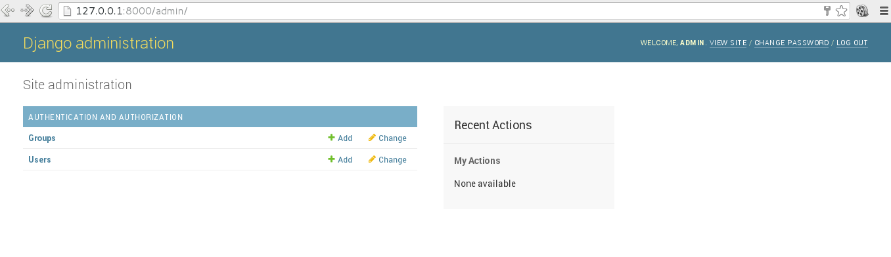

Iniciando Django con docker usando docker-compose con postgresql como microservicio.
Posted on Thu 11 February 2016 in Tutorial Python • 6 min read
En este artículo se tomará lo visto en el artículo de microservicios con docker donde se uso flask y redis, en este caso será con postgresql y Django.
Dejo a continuación la lista de artículos sobre docker que se ha tocado en el blog:
- Instalar Docker en Debian Jessie
- Uso de Docker en Debian Jessie (parte 1)
- Uso de Docker en Debian Jessie (parte 2)
- Crear una imagen Docker a partir de un archivo Dockerfile
- Iniciando Django usando Docker
- Instalar Gitlab por medio de Docker
- Ejecutando microservicios con docker usando docker-compose
- Docker en Docker (DinD)
El artículo se basa en un artículo en inglés sobre docker-compose y django.
La idea es tener dos contenedores uno ejecutando postgresql y en otro Django.
En un directorio se crea el archivo Dockerfile con el siguiente contenido:
FROM python:2.7
ENV PYTHONUNBUFFERED 1
RUN mkdir /codigo
WORKDIR /codigo
ADD requerimientos.txt /codigo/
RUN pip install --upgrade pip
RUN pip install -r requermientos.txt
ADD . /codigo/
El archivo requerimientos.txt contendrá la instalación de Django y de la librería psycopg2 para conectarse a postgresql desde django:
Django
psycopg2
El último archivo a crear es el que usará docker-compose con el nombre de docker-compose.yml y su contenido iniciará la base de datos postgresql y luego a Django:
bd:
image: postgres
web:
build: .
command: python manage.py runserver 0.0.0.0:8000
volumes:
- .:/codigo
ports:
- "8000:8000"
links:
- bd
Se tendrán dos contenedores uno llamado bd y otro web. El comando a iniciar DJango es el que se conoce y usa el puerto 8000 que será visto de manera pública.
A continuación se crea el proyecto Django con el siguiente comando:
docker-compose run web django-admin.py startproject djangoapp .
Building web
Step 1 : FROM python:2.7
---> 19ab33b86bc6
Step 2 : ENV PYTHONUNBUFFERED 1
---> Running in eb54e8bab43f
---> a4206823aac3
Removing intermediate container eb54e8bab43f
Step 3 : RUN mkdir /app
---> Running in bf221dbca163
---> 44eb31969545
Removing intermediate container bf221dbca163
Step 4 : WORKDIR /app
---> Running in 6209e18e7e87
---> 6f7d50fc9b12
Removing intermediate container 6209e18e7e87
Step 5 : ADD requerimientos.txt /app/
---> 293c5424f664
Removing intermediate container c072ad8ca2ae
Step 6 : RUN pip install --upgrade pip
---> Running in 48f862804290
Collecting pip
Downloading pip-8.0.2-py2.py3-none-any.whl (1.2MB)
Installing collected packages: pip
Found existing installation: pip 7.1.2
Uninstalling pip-7.1.2:
Successfully uninstalled pip-7.1.2
Successfully installed pip-8.0.2
---> 6126a41cd55b
Removing intermediate container 48f862804290
Step 7 : RUN pip install -r requerimientos.txt
---> Running in 7e6c9ff9fefa
Collecting Django (from -r requerimientos.txt (line 1))
Downloading Django-1.9.2-py2.py3-none-any.whl (6.6MB)
Collecting psycopg2 (from -r requerimientos.txt (line 2))
Downloading psycopg2-2.6.1.tar.gz (371kB)
Building wheels for collected packages: psycopg2
Running setup.py bdist_wheel for psycopg2: started
Running setup.py bdist_wheel for psycopg2: finished with status 'done'
Stored in directory: /root/.cache/pip/wheels/e2/9a/5e/7b620848bbc7cfb9084aafea077be11618c2b5067bd532f329
Successfully built psycopg2
Installing collected packages: Django, psycopg2
Successfully installed Django-1.9.2 psycopg2-2.6.1
---> 971bcfbe34ec
Removing intermediate container 7e6c9ff9fefa
Step 8 : ADD . /app/
---> 7a7faf87cf21
Removing intermediate container 6c246df080b3
Successfully built 7a7faf87cf21
Esto generará un directorio y unos archivos como se muestra a continuación:
ls -l
total 20
drwxr-xr-x 2 root root 4096 feb 10 21:35 djangoapp
-rw-r--r-- 1 ernesto ernesto 174 feb 10 21:14 docker-compose.yml
-rw-r--r-- 1 ernesto ernesto 177 feb 10 21:14 Dockerfile
-rwxr-xr-x 1 root root 252 feb 10 21:35 manage.py
-rw-r--r-- 1 ernesto ernesto 17 feb 10 20:10 requerimientos.txt
Es necesario cambiar de usuario al directorio djangoapp y a manage.py.
sudo chown -R $USER:$USER .
Se revisan las imagenes creadas:
docker images
REPOSITORY TAG IMAGE ID CREATED VIRTUAL SIZE
docker5_web latest 7a7faf87cf21 4 minutes ago 715.2 MB
postgres latest 54fa18d9f3b6 2 weeks ago 263.8 MB
Modificar el archivo djangoapp/settings.py para dar soporte a la conexión al contenedor de postgresql:
Modificar la sección database con el siguiente contenido:
DATABASES = {
'default': {
'ENGINE': 'django.db.backends.postgresql_psycopg2',
'NAME': 'postgres',
'USER': 'postgres',
'HOST': 'db',
'PORT': 5432,
}
}
El usuario y clave son los que tiene predefinido la imagen de docker para postgresql.
Se ejecuta migrate del manage.py para crear las tablas:
docker-compose run web python manage.py migrate
Operations to perform:
Apply all migrations: admin, contenttypes, auth, sessions
Running migrations:
Rendering model states... DONE
Applying contenttypes.0001_initial... OK
Applying auth.0001_initial... OK
Applying admin.0001_initial... OK
Applying admin.0002_logentry_remove_auto_add... OK
Applying contenttypes.0002_remove_content_type_name... OK
Applying auth.0002_alter_permission_name_max_length... OK
Applying auth.0003_alter_user_email_max_length... OK
Applying auth.0004_alter_user_username_opts... OK
Applying auth.0005_alter_user_last_login_null... OK
Applying auth.0006_require_contenttypes_0002... OK
Applying auth.0007_alter_validators_add_error_messages... OK
Applying sessions.0001_initial... OK
Se crea la cuenta de administrador de django:
docker-compose run web python manage.py createsuperuser
Username (leave blank to use 'root'): admin
Email address:
Password:
Password (again):
Superuser created successfully.
Para levantar el servidor web de django se inicia docker-compose:
$docker-compose up
docker5_db_1 is up-to-date
Creating docker5_web_1
Attaching to docker5_db_1, docker5_web_1
db_1 | The files belonging to this database system will be owned by user "postgres".
db_1 | This user must also own the server process.
db_1 |
db_1 | The database cluster will be initialized with locale "en_US.utf8".
db_1 | The default database encoding has accordingly been set to "UTF8".
db_1 | The default text search configuration will be set to "english".
db_1 |
db_1 | Data page checksums are disabled.
db_1 |
db_1 | fixing permissions on existing directory /var/lib/postgresql/data ... ok
db_1 | creating subdirectories ... ok
db_1 | selecting default max_connections ... 100
db_1 | selecting default shared_buffers ... 128MB
db_1 | selecting dynamic shared memory implementation ... posix
db_1 | creating configuration files ... ok
db_1 | creating template1 database in /var/lib/postgresql/data/base/1 ... ok
db_1 | initializing pg_authid ... ok
db_1 | initializing dependencies ... ok
db_1 | creating system views ... ok
db_1 | loading system objects' descriptions ... ok
db_1 | creating collations ... ok
db_1 | creating conversions ... ok
db_1 | creating dictionaries ... ok
db_1 | setting privileges on built-in objects ... ok
db_1 | creating information schema ... ok
db_1 | loading PL/pgSQL server-side language ... ok
db_1 | vacuuming database template1 ... ok
db_1 | copying template1 to template0 ... ok
db_1 | copying template1 to postgres ... ok
db_1 | syncing data to disk ... ok
db_1 |
db_1 | WARNING: enabling "trust" authentication for local connections
db_1 | You can change this by editing pg_hba.conf or using the option -A, or
db_1 | --auth-local and --auth-host, the next time you run initdb.
db_1 |
db_1 | Success. You can now start the database server using:
db_1 |
db_1 | pg_ctl -D /var/lib/postgresql/data -l logfile start
db_1 |
db_1 | ****************************************************
db_1 | WARNING: No password has been set for the database.
db_1 | This will allow anyone with access to the
db_1 | Postgres port to access your database. In
db_1 | Docker's default configuration, this is
db_1 | effectively any other container on the same
db_1 | system.
db_1 |
db_1 | Use "-e POSTGRES_PASSWORD=password" to set
db_1 | it in "docker run".
db_1 | ****************************************************
db_1 | waiting for server to start....LOG: database system was shut down at 2016-02-11 04:34:33 UTC
db_1 | LOG: MultiXact member wraparound protections are now enabled
db_1 | LOG: database system is ready to accept connections
db_1 | LOG: autovacuum launcher started
db_1 | done
db_1 | server started
db_1 | ALTER ROLE
db_1 |
db_1 |
db_1 | /docker-entrypoint.sh: ignoring /docker-entrypoint-initdb.d/*
db_1 |
db_1 | LOG: received fast shutdown request
db_1 | LOG: aborting any active transactions
db_1 | waiting for server to shut down...LOG: autovacuum launcher shutting down
db_1 | .LOG: shutting down
db_1 | LOG: database system is shut down
db_1 | done
db_1 | server stopped
db_1 |
db_1 | PostgreSQL init process complete; ready for start up.
db_1 |
db_1 | LOG: database system was shut down at 2016-02-11 04:34:38 UTC
db_1 | LOG: MultiXact member wraparound protections are now enabled
db_1 | LOG: database system is ready to accept connections
db_1 | LOG: autovacuum launcher started
db_1 | LOG: database system was interrupted; last known up at 2016-02-11 04:34:39 UTC
db_1 | LOG: database system was not properly shut down; automatic recovery in progress
db_1 | LOG: invalid record length at 0/1707848
db_1 | LOG: redo is not required
db_1 | LOG: MultiXact member wraparound protections are now enabled
db_1 | LOG: database system is ready to accept connections
db_1 | LOG: autovacuum launcher started
db_1 | ERROR: relation "auth_user" does not exist at character 280
db_1 | STATEMENT: SELECT "auth_user"."id", "auth_user"."password", "auth_user"."last_login", "auth_user"."is_superuser", "auth_user"."username", "auth_user"."first_name", "auth_user"."last_name", "auth_user"."email", "auth_user"."is_staff", "auth_user"."is_active", "auth_user"."date_joined" FROM "auth_user" WHERE "auth_user"."username" = 'root'
web_1 | Performing system checks...
web_1 |
web_1 | System check identified no issues (0 silenced).
web_1 | February 11, 2016 - 12:38:56
web_1 | Django version 1.9.2, using settings 'djangoapp.settings'
web_1 | Starting development server at http://0.0.0.0:8000/
web_1 | Quit the server with CONTROL-C.
Sólo queda abrir el navegador en la siguiente URL http://127.0.0.1:8000/admin.
A continuación la imagen de la sesión de admin de Django:

Y la figura de los logs de la ejecución de Django:

Como se vió en el artículo se puede ejecutar los comandos del manage.py desde fuera del contenedor que estos comandos se ejecutarán en el contenedor.
Ya con esto se pueden realizar configuraciones más complejas como incorporar redis o rabbitMQ (con Django Celery, explicado en un artículo anterior) y lo mejor es que la configuración es simplemente adaptar lo que existe a las necesidades puntuales del proyecto.
Referencias:
- Quickstart: Compose and Django.
- Packaging Django applications into Docker container images.
- Deploy de Django sobre Docker.
- Docker Explicado: Cómo crear Contenedores de Docker corriendo en Memcached.
- Docker en la ejecución de test de integración en NodeJS.
¡Haz tu donativo! Si te gustó el artículo puedes realizar un donativo con Bitcoin (BTC) usando la billetera digital de tu preferencia a la siguiente dirección: 17MtNybhdkA9GV3UNS6BTwPcuhjXoPrSzV
O Escaneando el código QR desde la billetera: